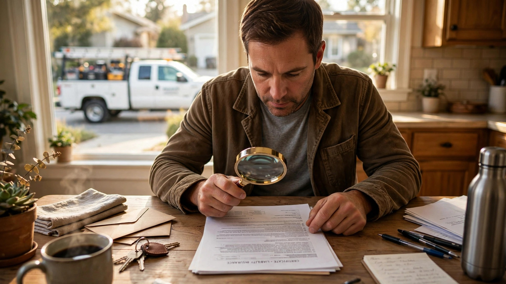

Your Contractor's Proof of Insurance Contains a Sentence That Says It Isn't Proof. An AI Catches That in Thirty Seconds. Nobody Built It for Your Kitchen Remodel.
Pull out the certificate of insurance your contractor gave you before starting work on your house. ACORD form, policy numbers running across the top, carrier name in bold, coverage limits neatly stacked in a grid, maybe even your name listed as an additional insured. It sits in your project folder with the contract and the lien waiver and the draw schedule, radiating a quiet competence that says: if something goes wrong, insurance will handle it.
Now read the fine print at the bottom.
"This certificate is issued as a matter of information only and confers no rights upon the certificate holder. This certificate does not affirmatively or negatively amend, extend or alter the coverage afforded by the policies below."
That language is standard. It appears on every ACORD Certificate of Liability Insurance issued in the United States. It means precisely what it says: the document you are holding does not actually prove you are covered. It does not prove the policy is active. It does not prove the limits are adequate for your project. It does not prove that the endorsements you need exist. Courts in New York have held that a COI, by itself, "does not confer coverage" and is merely "evidence of a carrier's intent to provide coverage but not a contract to insure the designated party nor conclusive proof, standing alone, that such a contract exists" (Tribeca Broadway Assocs. v. Mount Vernon Fire Ins. Co., 2004).
That document proves your contractor is insured while literally stating, in its own standardized fine print, that it does not prove your contractor is insured. On commercial construction projects, AI platforms have been catching this discrepancy for years, cross-referencing the certificate against the actual policy endorsements and carrier databases in real time. On your kitchen remodel, nobody is checking anything at all.
Four Hundred Thousand Certificates a Month, None of Them Yours
TrustLayer, a San Francisco compliance automation platform, processes more than 400,000 certificates of insurance every month. Its AI assigns a confidence score to each document, drawing on a database of millions of compliance records built from a network of nearly 300,000 companies. When a subcontractor uploads a COI, the system checks it against the requirements in the contract, verifies that the carrier signatures are genuine, flags anomalies that indicate alteration or fabrication, and surfaces deficiencies before a worker sets foot on site.
BCS, a competing platform, claims its RiskBot AI reviews a certificate in thirty seconds and blocks deficient contractors from accessing a jobsite. By their estimate, manual COI verification takes thirty minutes per certificate and costs a typical general contractor fifteen to twenty hours per week in administrative time. Multiply that across dozens of subcontractors across dozens of projects and the math gets ugly fast. Automating the check saves time, but more importantly, it catches the forged ones.
Sophisticated forgeries exist in every corner of the market: tampered PDFs with fabricated carrier signatures, policies that lapsed two months before the certificate was generated, coverage limits manually edited upward in a photo editor, endorsements that reference policy numbers belonging to a different contractor entirely. TrustLayer's machine learning models, trained on the patterns hidden inside millions of legitimate documents, catch anomalies that a project manager scanning a PDF over lunch would never notice.
None of these platforms serve residential homeowners, and no consumer-facing alternative exists.
What the Homeowner Gets Instead
The New Hampshire Department of Insurance published a consumer guide advising homeowners to verify contractor insurance. Its recommendations are revealing for what they concede about the status quo. Homeowners should "ask that the certificate be sent directly from the insurance agent." They should "contact the insurance company or agent listed on the certificate to confirm that the policy is active, in force, and adequate for the scope of the project." They should "confirm that any subcontractors hired by the contractor carry insurance coverage equal to or greater than the primary contractor's coverage."
This is the state of the art for residential COI verification in 2026: call the phone number printed on the paper and ask a stranger whether the paper is real.
A homeowner spending $350,000 on a remodel gets to hope that the certificate in their folder was accurate on the day it was printed and that nothing has changed since. Policies can be canceled mid-project, coverage can lapse without notice, and riders can be dropped after the certificate was generated. Discovery happens the day someone falls off the scaffold, and not a minute before.
Upstream Liability and the Workers' Comp Trap
The financial consequences of this verification gap are not hypothetical. When a subcontractor's workers' compensation insurance lapses and one of their workers is injured on your property, the claim migrates upstream. If the general contractor's policy responds, their experience modification rate increases, premiums spike, and future bids become less competitive. If the GC also lacks adequate coverage, the claim reaches the homeowner's general liability or umbrella policy. In some states, the homeowner may face direct exposure.
Insurance professionals have given it a name: the uninsured sub problem, and it unfolds the same way every time. A general contractor hires a small framing crew for a residential project, either collecting no certificate at all or collecting one that sits in a drawer unverified until it is needed. A worker falls from a scaffold. No workers' compensation coverage exists for the crew. Claims settle under the GC's policy, premiums spike, experience modification rates climb, and future project bids carry the financial scar for three to five years after the injury occurred.
In commercial construction, AI-driven audit platforms now cross-reference payroll records, 1099 filings, subcontractor agreements, and COIs to catch misclassification. When the same individual appears on both a W-2 and a 1099 in close proximity, the system flags it before the audit catches up. When a COI's effective dates do not cover the invoice period or the project timeline, it alerts the auditor with page citations. When a carrier's policy contains exclusions that would eliminate the relevant trade hazard, the flag goes up automatically. Residential projects have none of this infrastructure and no obvious path to getting it.
Additional Insured: An Illusion Written in Fine Print
Contract language compounds the problem because many construction contracts require a subcontractor to name the general contractor and the property owner as additional insureds on the sub's general liability policy, and a COI listing those parties appears to confirm compliance even though it does not.
In Vivify Construction v. Nautilus Insurance (2018), an Illinois appellate court upheld an insurer's denial of additional insured coverage despite a COI listing the general contractor, because the subcontractor's policy contained a broadened employee exclusion that removed from coverage any claim made by an employee of any insured, not just the insured seeking coverage. A subcontractor's worker was injured, the GC sought coverage as an additional insured, the carrier denied it, and the court agreed: the endorsement's exclusion language controlled the outcome, rendering the COI irrelevant to the question of actual coverage no matter what it appeared to promise on its face.
In Gilbane Building Co. v. Admiral Insurance Co., a court found that listing a party on a COI did not make them an additional insured when the underlying subcontract failed to explicitly require the endorsement, because the certificate's own disclaimer language put the GC on notice that being named on the form conferred no rights whatsoever under the actual policy.
An AI compliance platform catches this kind of gap automatically: it reads the subcontract, checks whether the additional insured requirement is explicitly stated, cross-references the COI against the actual policy endorsements, and flags the mismatch before work begins. A homeowner signing a $200,000 renovation contract has no way to perform this analysis and no idea they need to.
Why Nobody Built It for Residential
An enterprise platform prevents losses that routinely run into six figures, which justifies a $20,000 to $50,000 annual subscription for a commercial general contractor managing forty subcontractors across three active projects. A homeowner remodeling a kitchen hires one GC, who hires four to eight subs, for one project that lasts four to six months and never repeats. Verification matters just as much, but the price point does not support an enterprise SaaS subscription for a one-time buyer.
This is not a technology problem. AI for document verification exists, carrier databases are accessible, and pattern-matching that catches forged signatures has been deployed at scale for years in the commercial sector. What does not exist is a business model that makes it available to the person who needs it most: the homeowner who cannot absorb a six-figure uninsured loss and who has no professional training in reading insurance endorsements or cross-referencing policy exclusions against the work being performed on their property.
A consumer-facing tool could work differently. A homeowner uploads a photo of their contractor's COI. AI extracts the carrier name and policy number, checks it against a live carrier database, flags expiration dates, compares coverage limits against industry standards for the scope of work, and tells the homeowner in plain English whether the document is worth trusting. ewccv.com already lets anyone check whether a specific employer carried workers' comp on a specific date. Extending that principle to general liability and adding AI-powered document verification is not science fiction. It is an integration project that nobody has funded.
What You Can Do Right Now
Until someone builds the residential version, there are manual steps that provide real protection and cost nothing.
Request that the certificate come directly from the contractor's insurance agent or broker, not from the contractor, because a contractor who objects to this request is giving you information worth more than the certificate itself. Verify workers' compensation coverage independently using ewccv.com, then call the carrier's verification line to confirm the general liability policy is active on the date work begins. Ask to be named as an additional insured on the contractor's commercial general liability policy, which costs the contractor nothing and provides you with meaningful coverage if a claim arises from their work on your property. Request a thirty-day notice of cancellation endorsement so you will know if the policy lapses mid-project rather than discovering the gap after the damage is already done.
None of this is difficult, and all of it is more than most homeowners do, but all of it is a manual workaround for a verification process that commercial construction automated with AI years ago.
Limitations
Case law cited is from New York and Illinois jurisdictions; COI enforceability and estoppel rules vary significantly by state, and some appellate divisions within the same state disagree on the legal weight of a COI. Claim frequency data for the uninsured subcontractor scenario is drawn from insurance industry guidance rather than a controlled study. We could not determine the actual percentage of residential COIs that are fraudulent, expired, or inadequate because no public dataset tracking residential COI verification outcomes exists. That absence is, in itself, part of the problem.